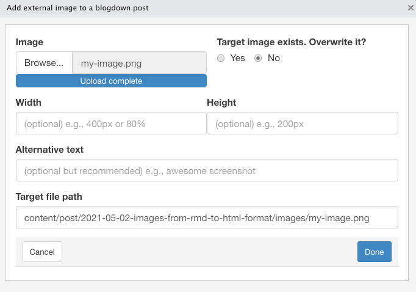

Introduction
This article is the first of a series of posts to investigate methods of inserting figures into different markdown formats. The resulting code depends on how images are included and the conversion tool they have to undergo. And — at least I think — also somewhat on the theme in use. In my case it is the blog widget of the starter-academic theme.
Here I look at the process chain from Rmd via Pandoc to HTML. I will inspect inserting images with the following methods:
- R chunk code via
knitr::include_graphics().
- ‘Insert Image’ window via blogdown Addins
- ‘Image …’ window vial Visual R Markdown
- Hugo shortcode
Of course, you can always include HTML instead of markdown code, but this case is not of interest here as there are no changes during the conversion process.
Using r chunk with knitr
You can include external images with the knitr function include_graphics(). There are many chunk options to specify the resulting figure, but not all are useful for external images.
- Use
out.width and out.height (not fig.width or fig.height, they are for R-generated plots)
- Use
out.extra to add CSS styles (see for details Style your image environment with CSS)
- If
fig.cap is provided without fig.alt, it will also function as alternative text, which is usually not desired.
- Use output hooks if you want even more control.
Code in R Chunk
```
{r img-with-knitr, echo=FALSE, fig.align='center', out.width='100%', fig.cap='Caption for figure 1', fig.alt='Alternative text for figure 1'}
knitr::include_graphics("images/my-image.png")
```
Code in HTML
```
<div class="figure" style="text-align: center"><span id="fig:img-with-knitr"></span>
<img src="images/my-image.png" alt="Alternative text for figure 1" width="100%">
<p class="caption">
Figure 1: Caption for figure 1
</p>
</div>
```
It is a stand-alone feature of knitr to provide automatically generated figure numbers that you can reference via their id. The id is generated from the chunk name with the pattern fig:<chunk name>. The figure 1 above can be referenced with \@ref(fig:img-with-knitr). Like this:
For more details see Figure 1.
{{% callout note %}} But in that case, you cannot use other methods to insert figures with numbers as knitr will not be aware of them. {{% /callout %}}
The relevant selectors for CSS styles are div.figure and p.caption. We will see that these styles are consistent with all the other methods provided by RStudio windows. But Hugo’s figure shortcode uses the HTML tags figure and figcaption. In the R Markdown Coobook is a work around expained how you can produce these Hugo HTML tags with knitr.
CSS
The CSS style I have used to display the image:
div.figure {
border: 1px;
border-style: groove;
box-shadow: 0 4px 8px 0 rgba(0, 0, 0, 0.2), 0 6px 20px rgba(0, 0, 0, 0.19);
}
p.caption {
text-align: center;
margin-top: -0.5rem;
margin-bottom: 0.5rem;
font-size: smaller;
}
Summary
Using the knitr function include_graphics() for external images provides a rich set of image attributes (tags). It is also very flexible, especially if you are using the more complex possibilities like programming the output chunk hook.
- Caption: yes
- Format of caption: no
- Caption automatically numbered: yes
- Alt: yes
- Title: no
- Tooltip: no
- Width/Height: yes
- Link to: no
- ID: yes (format: "fig:<chunk name>)
- Classes: yes (with
out.extra, example: out.extra='class="border shadowed"'
- CSS style: yes (with out.extra, example:
out.extra='style="background-color: #9ecff7; padding:10px; display: inline-block;"' See blog post Tips and tricks for working with images and figures in R Markdown documents
- Other (key=value): no
Markdown via Addins ‘Insert Image’

The possibilities of RStudio Addins window for blogdown are sparse. But it has one big advantage: The addin helps user to provide the correct file path and copies the image to the right place.
The RStudio Addins window for blogdown package allows only width / height arguments and alternative text. The content of the ‘alt’-attribute is in the final HTML code converted to the caption, which is not correct:
The alternate text should describe what you can see on the image in case the image does not appear (e.g., is blocked) or the user applies a screen reader. ‘Alt’ text is also rendered by search engines. Every picture should have a corresponding ‘alt’ attribute The caption by contrast is not so important. It provides additional information and appears under the image explaining the content to reader who are able to see the picture.
Example
{{% callout warning %}} You can’t use the Addins ‘Insert Image’ in Visual R Markdown mode because it protects the conversion by adding a backslash in front of the squared brackets: !\[Alt text\](images/my-image.png).{{% /callout %}}
Code in markdown
RStudio Addins window produces the following markdown code:
{width=100%}
I think starting with the RStudio version 1.4 (January 2021) the RStudio Addin window is superseded by the the Visual R Markdown window (see next section). If you are turning on the visual editor you can always enhance the rudimentary markdown of the addin window with all the features of Visual R Markdown.
For this improvement you need to
- turn on Visual RStudio Markdown;
- select the image which markdown you want to enhance;
- click into the small round button with the three points to open up the dialog window;
- correct or add the desired content for the attributes (there is more under the “Attributes” tab);
- close the window;
If you want to work with markdown directly you may turn off Visual RStudio Markdown.
Code in HTML
Here I am referring to the RStudio Addin without enhancement from the Visual R Markdown window.
<div class="figure">
<img src="images/my-image.png" alt="">
<p class="caption"><strong>Figure 2:</strong> Caption for this figure 1
</p>
</div>
As you can see: The alt attribute is empty, although I have filled it out!
{{% callout note %}} If you do not provide text for the alt (= capture) attributes then there is no div.figure and p.caption class. In this case there is only the img tag as you can see with the image under the header Markdown via Addins ‘Insert Image’. {{% /callout %}}
Summary
- Caption: yes
- Format of caption: yes
- Caption automatically numbered: no
- Alt: no
- Title: no
- Tooltip: no
- Width/Height: yes
- Link to: no
- ID: no
- Classes: no
- CSS style: no
- Other (key=value): no
Results and Conclusion
Table: Features of different method of inserting images in Rmd files converting to HTML
| Caption |
✅ |
✅ |
✅ |
✅ |
|
| C. format |
❌ 2 |
✅ |
❌ |
❌ 2 |
2 standard = bold |
| C.numbered |
✅ |
❌ |
❌ |
✅ 3 |
3 via ‘Academic’ theme |
| Alt |
✅ |
❌ |
✅ 4 |
✅ |
4 via ‘Other’-field |
| Title |
❌ |
❌ |
✅ |
❌ |
|
| Tooltip |
❌ |
❌ |
✅ |
❌ |
|
| Width/Height |
✅ |
✅ |
✅ |
✅ |
|
| Link to |
❌ |
❌ |
✅ |
✅ |
|
| ID |
✅ 5 |
❌ |
✅ |
✅ 6 |
5 fig:<chunk name>
6 figure-<caption text> or ‘Academic’ theme |
| CSS |
✅ |
❌ |
✅ |
✅ |
|
| Other |
❌1 |
❌ |
✅ 7 |
✅ 8 |
1via output chunk arbitrary HTML code!
7 free choice!
8 target, rel, attr, attrlink |
If we take into account that code produced by the RStudio Addin window can be improved at any time with the Visual R Markdown window then all the four offered methods are pretty similar. But keep in mind that advantages on the one hand are often counter acted by disadvantages on other areas. So — for instance — provides the conversion via Pandoc many advantages but looses also some features of Hugo or the applied theme.
To sum up this this little investigation I see three patterns of decisions criteria:
- One big difference is the possibility to number the figures automatically. The Addin and Visual R Markdown windows do not provide this feature.
- On the other hand filling in the window fields is — especially for people who are not so comfortable with HTML or Markdown code — easier.
- Another decision criteria could be consistency: If you are using R chunks (which is the major reason to use the .Rmd format!) and want to be consistent throughout the file, then the decision for the
knitr method is obvious.
But let’s see what the other file format are producing. For people using different methods for their posts perhaps the comparison inside one file format is not sufficient. Perhaps there is a method not ideal when considered only one file format but has a higher consistency when looked all file format together.